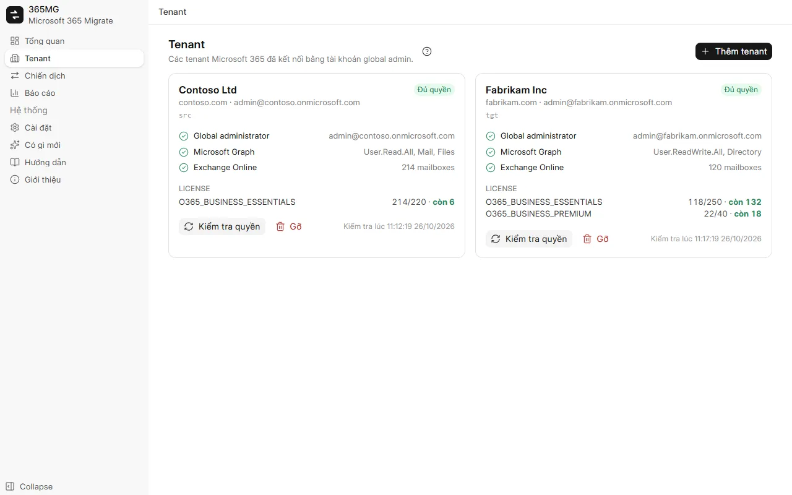
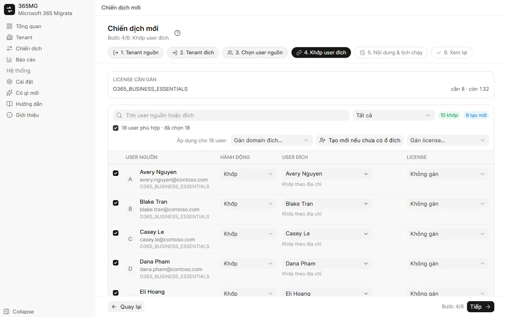
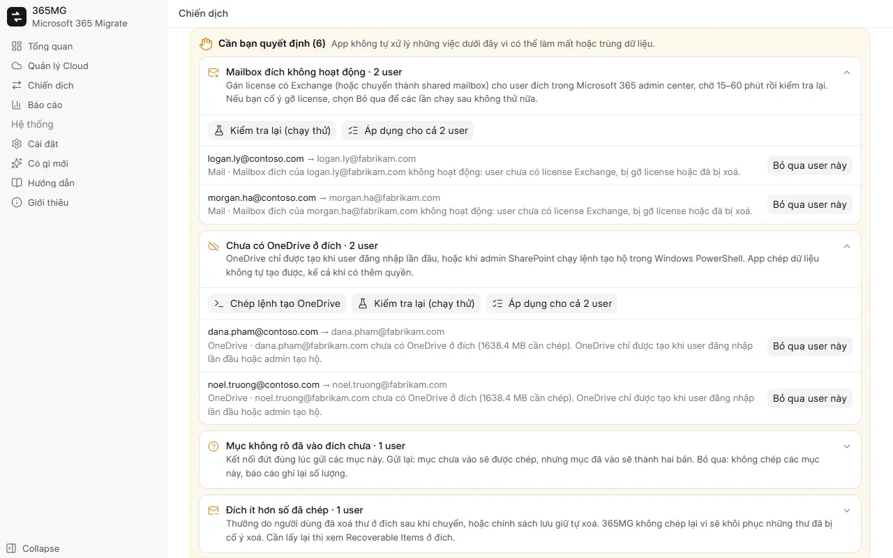

Hướng dẫn sử dụng
Từ lúc cài 365MG đến bản báo cáo cuối cùng. Mỗi phần có ảnh chụp màn hình; phần minh hoạ chạy lại các thao tác chính bằng con trỏ chuột động.
1. Cài đặt
365MG chạy trên Windows 10 hoặc 11 (64-bit) với Microsoft Edge WebView2, đã có sẵn trong Windows. Bộ cài do tác giả cung cấp: liên hệ theo địa chỉ ở cuối trang.
- Chạy
365MG_x.y.z_x64-setup.exevà làm theo trình cài đặt. - Mở 365MG từ menu Start. Dữ liệu nằm trên máy này, trong
%APPDATA%\com.tuanhd.365mg. - Vào Cài đặt, chọn ngôn ngữ giao diện và thư mục tạm trên ổ phụ.
2. Trước khi bắt đầu
- Một tài khoản global administrator ở cả tenant nguồn lẫn tenant đích.
- Đủ license có Exchange Online (và OneDrive) ở đích cho các user sẽ tạo hoặc khớp.
- Một máy có thể bật suốt thời gian chép, mạng nhanh và ổn định: dữ liệu đi qua máy này.
- Một ổ phụ cho thư mục tạm; chỉ file OneDrive từ 4 MB trở lên đi qua đó.
3. Thêm tenant
- Mở Tenant và bấm Thêm tenant.
- Đăng nhập global admin trong cửa sổ trình duyệt vừa mở và đồng ý cấp quyền.
- Quay lại 365MG, tenant hiện domain, kết quả kiểm tra quyền và license. Bấm Kiểm tra quyền sau khi thay đổi gì trong admin center.

4. Tạo chiến dịch
Một chiến dịch chuyển một nhóm user từ một tenant nguồn sang một tenant đích. Wizard có sáu bước; tiêu đề, các bước và bộ lọc luôn hiện ở trên, các nút Quay lại / Tiếp / Lưu chiến dịch luôn ở dưới.
- Tenant nguồn và Tenant đích: mỗi bước chọn một tenant.
- Chọn user nguồn: lọc theo license, domain hoặc trạng thái, tích user trong danh sách rồi thêm vào phần đã chọn.
- Khớp user đích: 365MG gợi ý user đích theo địa chỉ, alias hoặc tên hiển thị. Tích các dòng rồi dùng Gán domain đích…, Tạo mới nếu chưa có ở đích hoặc Gán license… hàng loạt; ô tích phía trên danh sách (N user phù hợp) chọn mọi dòng bộ lọc đang hiện.
- Nội dung & lịch chạy: mail, OneDrive, danh bạ, lịch; bỏ qua Junk Email; chạy một lần hoặc mỗi N giờ; số luồng.
- Xem lại: kiểm tra tóm tắt và số license cần, rồi bấm Lưu chiến dịch.

5. Chuẩn bị user đích
Trong trang chiến dịch, Tạo user & gán license tạo các user đích đánh dấu "Tạo mới" và gán license đã chọn cho mọi user. Dòng nào lỗi sẽ ghi lý do; sửa xong thì bấm lại.
User mới nhận mật khẩu ngẫu nhiên, phải đổi ở lần đăng nhập đầu. Xuất danh sách từ menu ⋯ thành CSV, giao cho người dùng rồi xoá file.
6. Chia đợt và chạy thử
Ở tab User, tích chọn user và bấm Xếp vào đợt để chia nhỏ một lần chuyển lớn. Thanh điều khiển chạy khi đó cho chép từng đợt; lịch định kỳ tiếp tục đồng bộ mọi đợt đã mở.
Chạy thử (chỉ đếm) đọc cả hai phía và báo số mục, số file và dung lượng một lần chạy thật sẽ chép. Nó không ghi gì vào đích, đồng thời kiểm tra mailbox và OneDrive đích của từng user đã có chưa.
7. Chạy, tạm dừng, chạy tiếp
Thanh điều khiển ở đầu mọi tab của chiến dịch cho biết chiến dịch đang làm gì và sắp làm gì.
| Trạng thái | Hiển thị | Nút |
|---|---|---|
| Chưa chạy lần nào | Lịch chạy | Bắt đầu ngay, Chạy thử |
| Đang chép | Thời gian đã chạy, số luồng đang chạy và đang chờ | Tạm dừng |
| Tạm dừng | Lần chạy gần nhất | Chạy tiếp (chép nốt phần còn lại) |
| Đã đồng bộ | Giờ xong và lần tự chạy tới | Chạy lại (lấy dữ liệu mới), Tạm dừng lịch |
Tạm dừng sẽ dừng các luồng và giữ lịch không tự chạy. Mọi thứ đã chép vẫn nằm trong nhật ký nên chạy tiếp không bao giờ trùng. Tab Tiến trình chép hiện từng mailbox và OneDrive kèm tốc độ; luồng đứng yên sẽ được tự khởi động lại.
8. Cần bạn quyết định
Khi gặp việc không nên tự xử lý, chiến dịch hiện mục Cần bạn quyết định, nhóm theo loại, kèm giải thích và nút xử lý cho từng user.
| Loại | Cần làm gì |
|---|---|
| Mailbox đích không hoạt động | Gán license (hoặc chuyển thành shared mailbox), chờ 15–60 phút rồi Kiểm tra lại. Nếu cố ý gỡ license, bấm Bỏ qua user này. |
| Chưa có OneDrive ở đích | Chép lệnh tạo OneDrive, chạy trong Windows PowerShell bằng admin SharePoint, hoặc để user đăng nhập một lần; rồi kiểm tra lại. |
| User đích đã bị tạo lại | Chép lại từ đầu vào mailbox hoặc OneDrive mới, hoặc bỏ qua. |
| Mục không rõ đã vào đích chưa | Gửi lại N mục (mục đã vào sẽ thành hai bản) hoặc Bỏ qua các mục này. |
| Đích ít hơn số đã chép | Thường do người dùng cố ý xoá ở đích; bấm Đã hiểu. |

9. Nhóm mail
Ở tab Nhóm mail, chọn nhóm nguồn rồi bấm Tạo nhóm & thêm thành viên. Graph chỉ tạo được nhóm Microsoft 365, nên danh sách phân phối và nhóm bảo mật có mail được tạo thành nhóm Microsoft 365 cùng alias, gửi thư vào hộp thư thành viên và nhận thư từ bên ngoài. Thành viên chưa có user ở đích được liệt kê theo từng nhóm.
10. Báo cáo
Báo cáo hiện, theo từng chiến dịch, số liệu nguồn và đã chép theo user và tổng, user cần chú ý, nhóm và ghi chú. Xuất HTML tạo một trang duy nhất (sáng và tối, tìm và lọc) rồi mở ra; xuất CSV cho danh sách user hoặc nhóm.
11. Cài đặt và ngôn ngữ
- Ngôn ngữ: chín ngôn ngữ, đổi là có tác dụng ngay; tiếng Ả Rập chuyển bố cục sang phải-sang-trái.
- Thư mục tạm: không đặt trên ổ C.
- Coi luồng là kẹt sau: số phút không có tiến triển trước khi luồng được khởi động lại (tối đa 2 lần).
12. Cập nhật
Có gì mới liệt kê thay đổi của mọi phiên bản. Khi có bản mới, sidebar báo ngay; Cập nhật lên x.y.z tải bản mới, kiểm tra chữ ký của tác giả, đóng app, cài và mở lại. Hãy tạm dừng các chiến dịch đang chạy trước, cập nhật xong thì chạy tiếp.
13. Xử lý sự cố
| Hiện tượng | Nguyên nhân và cách xử lý |
|---|---|
| "Chờ quyền của app chép dữ liệu có hiệu lực" | App mới cần vài phút để Exchange và SharePoint chấp nhận; lần chạy tự chờ tối đa 30 phút. |
| Tốc độ giảm, nhiều thông báo giới hạn tốc độ | Exchange và SharePoint giới hạn theo từng mailbox và từng app. Thêm luồng không làm một mailbox nhanh hơn; chỉ có ích khi nhiều mailbox đang chờ. |
| Số ở đích thấp hơn nguồn | Xem ghi chú trong báo cáo: Junk Email được bỏ qua, mục bị bỏ qua theo quyết định, hoặc thư bị xoá ở đích. |
| Mailbox đích đã có thư | 365MG từ chối chép vào ở lần chạy đầu. Chỉ bật cho phép trong chiến dịch khi chắc chắn chưa công cụ nào chép vào đó. |